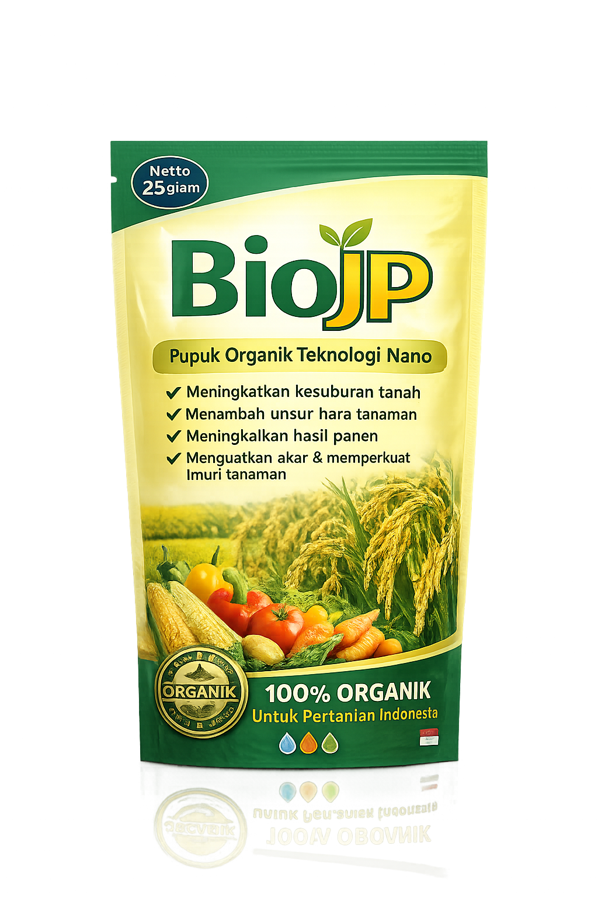

BioJP merupakan pupuk organik teknologi nano yang diformulasikan untuk membantu meningkatkan kesuburan tanah, memperkuat daya tahan tanaman, serta mendukung pertumbuhan tanaman secara optimal.
Produk ini mengandung unsur hara makro, mikro, serta teknologi nano yang membantu penyerapan nutrisi oleh tanaman sehingga mampu meningkatkan kualitas dan hasil panen.
Produk unggulan dengan teknologi nano untuk membantu meningkatkan produktivitas pertanian.
✔ Berat Bersih : 250 gram
✔ Isi : 10 Sachet @25 gram
✔ Jenis : Pupuk Organik
✔ Teknologi Nano
BioJP hadir sebagai mitra pertanian dengan berbagai layanan terbaik untuk mendukung produktivitas petani Indonesia.
Kami menyediakan berbagai jasa di bidang pertanian sesuai kebutuhan petani dan mitra usaha.
Semua kebutuhan pertanian tersedia dalam satu layanan, mulai dari produk hingga konsultasi.
Menyediakan pupuk utama berkualitas untuk meningkatkan pertumbuhan dan hasil panen.
Pupuk pendamping yang membantu memenuhi kebutuhan nutrisi tanaman secara optimal.
Kami siap mendukung komunitas, kelompok tani, dan paguyuban petani di seluruh Indonesia melalui kerja sama dan pendampingan.
BioJP memberikan berbagai manfaat untuk membantu meningkatkan pertumbuhan dan produktivitas tanaman.
Membantu menjaga struktur tanah agar lebih subur dan siap mendukung pertumbuhan tanaman.
Memenuhi kebutuhan unsur hara makro dan mikro yang dibutuhkan tanaman.
Membantu tanaman lebih kuat menghadapi penyakit dan kondisi lingkungan.
Mendukung pertumbuhan tanaman sehingga hasil panen menjadi lebih optimal.
Membantu pertumbuhan akar, batang, daun, bunga, dan buah.
Teknologi nano membantu penyerapan nutrisi lebih efektif oleh tanaman.
BioJP hadir dengan teknologi dan kandungan terbaik untuk membantu meningkatkan kesuburan tanah, kesehatan tanaman, serta mengoptimalkan penyerapan nutrisi.
Membantu meningkatkan Kapasitas Tukar Kation (KTK) sehingga tanah lebih mampu menyerap, menyimpan, dan menyediakan unsur hara bagi tanaman secara optimal.
Mengandung unsur mikro yang lengkap untuk membantu meningkatkan daya tahan tanaman terhadap penyakit, sehingga tanaman tumbuh lebih sehat dan kuat.
Membantu mempercepat pertumbuhan akar, batang, daun, dan bunga serta meningkatkan penyerapan nutrisi sehingga tanaman tumbuh lebih optimal pada berbagai kondisi lahan.
BioJP dapat diaplikasikan pada berbagai jenis tanaman dengan metode yang disesuaikan.
Unduh katalog resmi BioJP untuk mendapatkan informasi lengkap mengenai produk, layanan, keunggulan, serta panduan penggunaan.
Download KatalogTemukan jawaban atas pertanyaan yang sering diajukan mengenai produk BioJP.
Apabila Anda memiliki pertanyaan mengenai produk BioJP, silakan hubungi kami melalui kontak berikut.
Jl. ............................................
+62 812-3456-7890
info@biojp.com
Senin - Sabtu
08.00 - 17.00 WIB